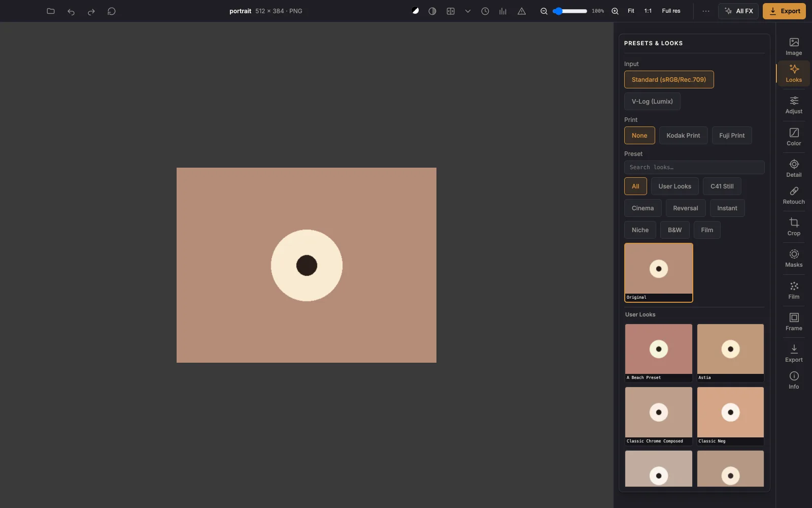

113 film looks, one tap
Pick a look, then dial it back until it feels right. Kodak, Fuji, cinema stocks,
instant film, black and white — and you can load any .cube you already own.
Each look is a 33³ colour lookup table applied on the GPU, so a 24-megapixel photo previews instantly.